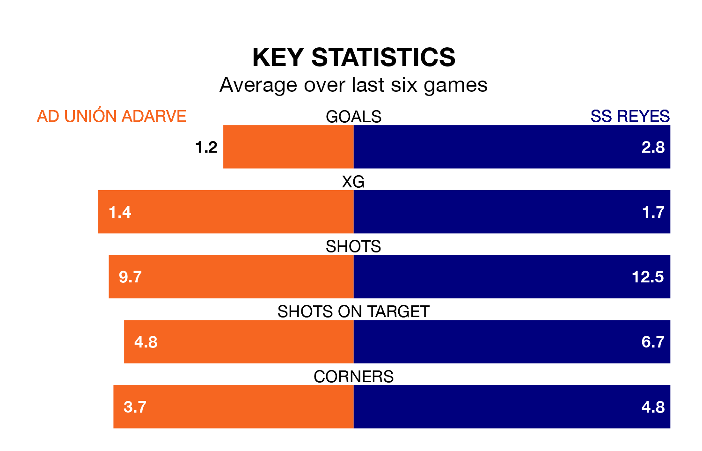

Sunday's early match between AD Unión Adarve and SS Reyes promises to be one for the neutrals, as two of the Segunda División RFEF Group 5's most free-scoring sides go head-to-head.
Ahead of the game, Unión Adarve and SS Reyes sit fourth and top in the goal-scoring charts, with 44 and 59 goals respectively.
Striker Álvaro Sánchez Gutiérrez leads the way for the home side, having bagged nine goals in their 33 games to date.
And Juan David Victoria López has been the main man in the opponents' penalty box for SS Reyes, with eight goals.
SS Reyes are second in the table after 33 games, of which they have won 15 and drawn 13, earning 58 points.
Unión Adarve are four places behind the away side in sixth, with 12 wins and 12 draws putting them on 48 points.
The hosts are in mixed form in the Segunda División RFEF Group 5, with three wins and a draw from their last six games.
With three wins and two draws over that period, SS Reyes's form is slightly better – they have taken 11 points from 18, compared to Unión Adarve's 10.
Unión Adarve's last match was on April 28, a 3-0 win against CD Mensajero, with Alberto Alburquerque Reus, Fernando Hartasánchez Muñoz and Francisco Javier Baldobar Torrado getting the goals for Unión Adarve.
SS Reyes beat CD Badajoz 3-2 last time out, also on April 28, with Andreu Arasa Fort, Guillermo Perero Manso and Jesús Ocaña Sánchez on the scoresheet.
Updated: 10:44 (UTC), 30/04/24